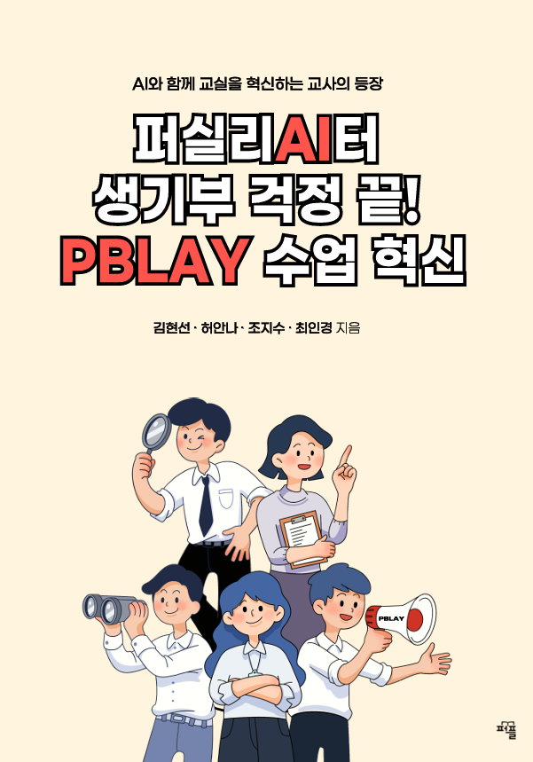

PBLAY 저서
퍼실리AI터 생기부 걱정 끝! PBLAY 수업 혁신

기획 의도
기존의 PBL(Project-Based Learning)은 교육 철학은 훌륭하지만 실제 수업에 적용하기에는 시간, 구조, 생기부 연계 등 여러 현실적 장벽이 존재합니다.
《퍼실리AI터 생기부 걱정 끝! PBLAY 수업 혁신》는 이러한 현장의 어려움을 해결하기 위해 만들어진 실전 중심의 가이드북입니다.
이 책은 교사들이 PBL 수업을 직접 설계하고 운영할 수 있도록 돕는 PBLAY 방법론을 소개하며, '학생 참여를 이끄는 퍼실리테이션', 'AI 도구를 활용한 수업 설계', '생기부 연계'라는 세 가지 차별화를 중심으로 구성되어 있습니다.
PBLAY 카드, GPTs AI 템플릿, 생기부 문장 예시 등 다양한 실습 도구를 함께 제공하여, 책 한 권만으로 수업부터 생기부까지 완성할 수 있는 실행력을 갖춘 안내서입니다.
목 차
제1장. AI시대의 새로운 교육 PBLAY
- 왜 PBLAY인가?
- AI 시대 새로운 교육 청사진
- 두 시간이면 된다고? Pre-PBLAY
- 학생들의 잠재력을 200% 끌어올리는 PBLAY
제2장. 학습자 참여를 만드는 러닝 퍼실리테이션 스킬
- 움직이지 않는 학습자를 변화시키는 한 마디
- 현장에서 바로 적용하는 PBLAY 실전 노하우
- 어떤 상황에도 흔들리지 않는 대처 스킬
- 체크 필수! 퍼실리AI터의 무기
제3장. AI, PBLAY 수업의 게임 체인저
- AI 시대의 교육, 왜 PBLAY와의 융합인가?
- AI 제대로 활용하기 : AI 나.잘.알. 만들기
- AI가 대신 뛰어주는 PBLAY 단계별 준비
- 부록 : 무료 버전과 유료 버전의 AI 비교
제4장. 사례로 경험하는 PBLAY활동 프로젝트
- 인식개선 프로젝트, "나do 지속가능해."
- 서비스/창업 프로젝트, "Balancer"
- 제품 설계 프로젝트, "나무젓가락 Zero"
- 혼합 프로젝트, "Sleep on/off"
- 사회 프로젝트, "워킹 스쿨버스"
제5장. PBLAY로 완성하는 스토리가 있는 생기부
- PBLAY와 생기부의 만남
- 현장에서 인정받은 PBLAY 생기부
- 입시에서 주목받는 PBLAY 활동 포인트
- 다음 과정으로 이어지는 PBLAY
퍼실리AI터란?
'퍼실리테이터(Facilitator)'와 'AI(Ask & Inquire)'를 결합한 용어로, 수업을 진행하고 촉진하는 사람을 넘어 긍정 탐색을 통해 학습자의 가능성과 미래를 함께 상상하고 지원하는 질문 중심의 동반자를 뜻합니다.
여기서 'AI'는 인공지능이 아닌, 교사의 탐색적 질문(Ask)과 깊이 있는 성찰(Inquire)의 태도를 상징합니다.
퍼실리AI터는 수업 속에서 일어나는, 작지만 중요한 순간들을 읽어내고, 적절한 질문과 조율을 통해 학습자의 전환점을 끌어내는 존재입니다.